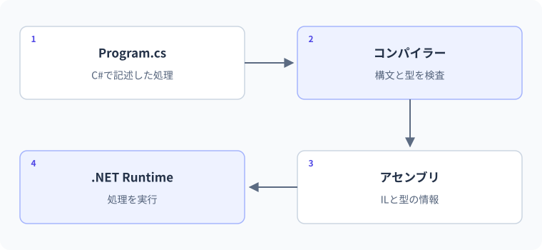

01 C#と.NET、最初の実行 — 詳細解説
ソースから画面表示まで。
最初は、画面に1行を表示するところから始めます。SDKの確認とプロジェクトの作成を済ませたら、短いコードを実行し、その後で「書いたコードがどう動くのか」を調べます。
プログラムの実行手順
プログラムとは、コンピューターに行わせる処理を順序と条件付きで記述したものです。「今月の学習時間を合計して表示する」なら、時間を用意し、足し算をし、結果を文字にして画面へ送る、という別々の仕事が必要です。人間なら補える「適当に合計して」の曖昧さをなくすために、C#の文法で一つずつ指定します。コードはその指示を書いた文章、ソースファイルはコードを保存したファイルです。
最初は、編集・保存・ビルド・実行・結果の確認を別の行動として理解します。画面に文字を書くだけではコンピューターに新しい指示は届きません。保存するとディスク上のファイルが変わり、ビルドするとそのファイルから実行用の成果物が作られ、実行すると成果物の指示に従って処理が進みます。期待と結果を照合して初めて、意図どおりのプログラムか判断できます。
「変数」は値を名前で参照するための仕組みです。int minutes = 20; は、整数を扱う型intの変数minutesを宣言し、20で初期化します。型とは、どの種類の値を扱い、どの操作を許すかという規則です。変数を使わず同じ20を何か所にも書くと、時間を変更するときに直し漏れが起きます。意味のある名前が、値の役割と変更場所を明らかにします。
メソッドとは、名前を付けた処理です。Console.WriteLine(...)は標準ライブラリが提供するメソッドの呼び出しで、かっこの中の値を画面へ書き、改行します。「標準ライブラリ」は.NETが用意する再利用可能な部品の集まりです。表示処理を自作せずに使えるため、自分が解きたい問題の処理に集中できます。メソッドを自分で定義する方法はLesson 07で扱います。
C#・SDK・CLR・IL・JITの分担
C#はコードを書くための規則です。.NET SDKはそのコードからアプリを作る道具一式で、プロジェクト作成用のひな形、コンパイラー、ビルドをまとめる道具などを含みます。コンパイラーは、C#として意味が通るかを検査し、別形式の命令へ変換するソフトウェアです。エディターは編集用の道具であり、SDKとは役割が異なります。
通常のプロジェクトをビルドすると、ILという中間的な命令と、型・メソッドなどの情報を持ったアセンブリが生成されます。アセンブリは配布や参照の単位で、多くの場合.dllファイルです。ILはC#の文章そのものでも、特定CPUの機械語そのものでもありません。型情報があるため、実行基盤は呼び出すメソッドや扱う値の種類を識別できます。
CLRは実行を支える基盤です。現行.NETの代表的な実装がCoreCLRです。一般的なJIT方式では、JITコンパイラーが必要に応じてメソッドをCPU向けの機械語に変換します。CLRはさらに、不要なオブジェクトのメモリを再利用可能にするGCや例外処理なども支えます。実際の変換回数やタイミングは最適化で変わるので、「全行を必ず一度だけ変換する」とは覚えません。
- 1Program.cs
人が読むC#ソースを保存
- 2.NET SDK / C#コンパイラー
構文と型を調べてビルド
- 3アセンブリ
ILと型情報を保持
- 4.NET Runtime / CLR
読み込み・実行・メモリ管理
- 5JIT → CPUの処理
必要な機械語を使って実行
- 6Consoleの出力
結果を人が確認
通常のコンソールアプリの実行過程を示した概念図です。Native AOTという、主な機械語変換を配布前に行う方式もあります。ソースの検査はコンパイル時、アプリの処理は実行時に行われます。
本文の実例との対応：ソースから画面表示まで
次の図は本文の実例「作業時間の集計」を使った補助例です。この節のコードとは変数や入力値が異なるため、処理の対応に注目します。

境界・比較例：計算済みの値と再計算
daysだけを変更してもtotalは変わりません。右辺をもう一度評価して代入した時点で200になります。
int days = 5;
int total = days * 25;
days = 8;
Console.WriteLine(total);
total = days * 25;
Console.WriteLine(total);想定出力
125
200コンソールプロジェクトの準備
ターミナルとは文字のコマンドで道具を操作する画面です。現在操作対象になっているフォルダーをカレントディレクトリと呼びます。次のコマンドはC#のコードではなく、ターミナルへ一行ずつ入力します。SDKを入れた直後にdotnetが見つからない場合は、まずターミナルを開き直します。
dotnet --list-sdks
dotnet new console -n FirstCSharp -f net10.0
cd FirstCSharp
dotnet build
dotnet run| 操作 | 何をするか | 確認するもの |
|---|---|---|
--list-sdks |
利用できるSDKの一覧を表示 | 10系のSDKがあるか |
new console |
コンソールアプリのひな形を作成 | FirstCSharpフォルダー |
cd |
操作するフォルダーを移動 | .csprojがある場所か |
build |
保存されたコードをビルド | エラーの有無と最初の診断 |
run |
必要なビルドを行って起動 | アプリ自身の表示内容 |
Program.csはC#のソース、.csprojは対象.NETなどを指定する設定ファイルです。binは主な成果物、objは中間生成物の置き場所です。表示内容を変えるときはProgram.csを編集します。生成された.dllやobj内のファイルを直接直しても、次のビルドで置き換えられます。
プロジェクトを作った直後と、ビルドした後ではファイルの数が変わります。役割で分類すると迷いません。
自分で編集実行したい処理を書く
設定として編集対象フレームワークなどを指定
ビルドが生成実行用と中間の成果物
表示を変えたいときはProgram.csを修正して保存します。bin内の生成物を書き換えても、次のビルドで正本から作り直されます。
最小例：一行ずつ値を確定する
Console.WriteLine("学習開始");
int minutes = 20;
int total = minutes + 10;
Console.WriteLine(total);
minutes = 50;
Console.WriteLine(total);期待される出力：
学習開始
30
30| 順序 | コードの意味 | minutes | total | 画面への追加 |
|---|---|---|---|---|
| ① | 文字列を表示する | 未宣言 | 未宣言 | 学習開始 |
| ② | minutesを20で初期化する | 20 | 未宣言 | なし |
| ③ | 20+10を計算してtotalへ保存する | 20 | 30 | なし |
| ④ | totalを読む | 20 | 30 | 30 |
| ⑤ | minutesだけを50へ変更する | 50 | 30 | なし |
| ⑥ | totalを再び読む | 50 | 30 | 30 |
=は数学の等式を宣言する記号ではなく、右側を評価して左側へ代入する記号です。totalに保存されたのは「minutes+10という将来も更新される式」ではなく、その時点で計算した30です。minutesを変えてもtotalが連動しないことは、後の参照型の学習でも基礎になります。
"学習開始"は文字列リテラルです。リテラルはコードに直接記述した値を意味します。20も整数リテラルです。文末の;は文の終わりを示し、改行の位置だけで文が終了するわけではありません。//以降はその行のコメントで、人向けの説明として使い、実行処理にはなりません。
計算式を変数に保存するときは、代入先を先に変更するわけではありません。ここではint total = 7 * 30;の一文だけを分解します。
- 1右辺を読む
7 と 30 - 2演算する
7 × 30 = 210 - 3左辺へ代入
total = 210
totalが保持するのは計算結果210です。7や30を後で別の変数から変更しても、この保存済みの値が自動で再計算されることはありません。
実用例：学習記録の小さな集計
int morningMinutes = 25;
int eveningMinutes = 40;
int totalMinutes = morningMinutes + eveningMinutes;
int goalMinutes = 90;
int remainingMinutes = goalMinutes - totalMinutes;
Console.WriteLine($"合計: {totalMinutes}分");
Console.WriteLine($"目標まで: {remainingMinutes}分");期待される出力：
合計: 65分
目標まで: 25分最初の二行は入力データの準備です。三行目が合計の計算、五行目が差の計算、最後の二行が表示です。$"...{totalMinutes}..."は文字列補間で、{}内の式の結果を文字へ変換して埋め込みます。変数名自体を表示するのではありません。変数名に単位のMinutesを含めると、時間と金額のような別の数値を足し合わせる誤りに気付きやすくなります。
現在の仕様では合計が目標を超えると残りが負になります。これは文法エラーではなく、表示の要件がまだ決まっていない問題です。「超過を負数で表示する」「0に抑える」のどちらも設計としてあり得ます。Lesson 05の条件分岐で、超過時の扱いを明示する方法へつながります。
失敗例：止まった段階を区別する
セミコロンがない場合
Console.WriteLine("学習開始")
int minutes = 20;
Console.WriteLine(minutes);これは文の区切りが欠けているためコンパイルで失敗します。診断の正確な文面や位置はSDKや周囲のコードで変わりますが、;不足を示す診断が手掛かりになります。エラーが次の行に表示されても、その直前に閉じ忘れがないか確認します。この場合はアプリの表示処理まで到達していません。
修正位置は一行目の末尾です。
Console.WriteLine("学習開始");
int minutes = 20;
Console.WriteLine(minutes);修正後の期待出力は「学習開始」、次の行に20です。SDKの再インストールや別のクラスの追加ではなく、欠けた区切りだけを補います。一つの構文誤りが複数の診断を引き起こすことがあるため、まず最初の診断から修正して再ビルドします。
編集したのに表示が変わらない場合
保存していない、違うプロジェクトを起動している、ビルドを省略して古い成果物を動かしている、という順に確認します。dotnet run --project "対象フォルダー"で対象を明示し、ソースを保存してから実行します。画面の表示だけを見て、どのソースが動いたかを推測しないことが大切です。
コンパイルエラーと、実行中に起きる問題では、確認の入口が違います。
dotnet buildは成功したか入力値・実行時の例外・想定した表示順を確認する
先頭のエラー番号・ファイル名・行番号を確認する
この分岐は調査の入口です。画面出力のない正常なプログラムもあるため、出力の有無だけで最終判断せず、コマンドのエラーと終了状態も読みます。
演習：出力予測とコード修正
基礎課題は、最小例のminutes = 50;をminutes = 80;へ変え、最後の表示を先に予測することです。入力はコード内の80、期待出力の最後は30です。式の結果を保存したという説明ができれば正解です。
標準課題は、変更後のminutesを使ってtotalも更新することです。ヒントは、五行目と最後の表示の間で計算をもう一度行うことです。
int minutes = 20;
int total = minutes + 10;
minutes = 80;
total = minutes + 10;
Console.WriteLine(total);期待出力は90です。最初の初期化を消して偶然90にするのではなく、更新が必要な時点で再計算しています。別解として表示時にminutes + 10を直接計算できますが、同じ結果を複数箇所で使うなら名前付きの変数が役立ちます。
応用課題は、学習集計の入力を朝45分、夜50分、目標90分へ変更し、現在の仕様の結果を説明することです。合計95分、残り-5分になります。負数を「実行できていない」と誤認せず、コードの計算は正しいが表示要件の検討が必要、と区別します。基礎・標準・応用の制作演習は親レッスンにもあり、この実験と合わせて取り組めます。
公式資料
確認日：2026年9月14日。本文の理解を補うための資料です。学習対象は.NET 10 / C# 14です。パッチ番号は固定しません。